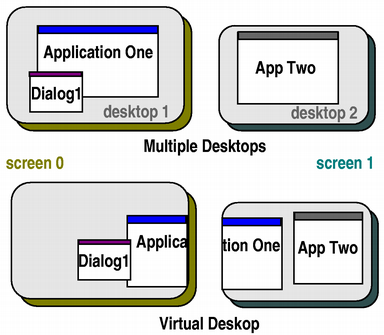

| Home · All Classes · Modules · QSS HELP · QSS 案例 · VER007 HOME |
该QDesktopWidget类提供了访问多头系统屏幕信息。More...
继承QWidget。
该QDesktopWidget类提供了访问多头系统屏幕信息。
与一个以上的显卡和显示器系统可以管理可用无论是作为多个桌面，或作为一个大的虚拟桌面的物理屏幕空间。
这个类提供有关用户的桌面的信息，如它的总大小，屏幕的数目，每个屏幕的几何形状，以及它们是否被配置为独立的台式机或单一的虚拟桌面。
Qt提供的Widget使用这个类来放置工具提示，菜单和对话框正确的屏幕为他们的父母或应用程序部件上。应用程序可以使用这个类来获得，可以用来保存窗口位置信息，或将子控件和对话框上的一个特定的屏幕。
该QApplication.desktop（ ）函数用于获取QDesktopWidget的一个实例。
widget的screenGeometry（ ）函数提供了有关与可用的屏幕的几何信息。可用的屏幕的数目是由返回screenCount和screenCountChanged当屏幕被添加或删除（）信号被发射。一个特定的点或小部件是位于屏幕数由返回screenNumber（ ） 。
要获取特定屏幕的尺寸，请致电screenGeometry（）函数。在一些桌面环境，并不是所有的屏幕可供应用程序使用，例如，一个应用程序停靠栏或菜单栏可能会佔用一些空间。使用availableGeometry（）函数来获得用于应用程序的可用面积。
QDesktopWidget也继承了QWidget性能，width（）和height（），它指定了桌面的尺寸。然而，对于具有多个屏幕桌面，桌面的大小是所有屏幕尺寸的工会，所以width（）和height（ ）应not用于计算一个窗口部件的被放置在屏幕上的一个尺寸。
在配置为使用可用的屏幕作为一个单一的，大型的虚拟桌面系统virtualDesktop属性将被设置为True。在这种情况下，小部件的大小通常是所有屏幕的边框的大小。
对于应用程序，主要部件所在的屏幕是主屏幕。这被存储在primaryScreen属性。在应用的上下文中打开的所有窗口应受限制到主屏幕的界限，例如，它会带来不便，如果一个对话框弹出一个不同的屏幕上，或在分割两个屏幕。

在上面的图中，一个应用程序的主屏幕是屏幕0 ，和App两种的主要屏幕是屏幕1 。
返回屏幕的索引可用几何screen。什么是可将subrect的screenGeometry（ ）基于什么平台的决定是可用的（例如不包括基座和菜单栏上的Mac OS X ，或任务栏上的Windows ） 。默认的屏幕如果使用screen是-1。
Note:在Symbian设备所报告的可用几何QDesktopWidget不能保证是正确的几何形状变化resize事件被传递给窗口部件的时间。听可用几何变化的正确方法是连接到workAreaResized（）的信号QDesktopWidget。
See also screenNumber（）和screenGeometry（ ） 。
这是一个重载函数。
返回一个包含屏幕的可用几何widget。
See also screenGeometry（ ） 。
这是一个重载函数。
返回一个包含屏幕的可用几何p。
See also screenGeometry（ ） 。
从重新实现QWidget.resizeEvent（ ） 。
返回表示索引屏幕小部件screen（值为-1表示默认屏幕） 。
如果系统使用虚拟桌面，返回的部件将拥有整个虚拟桌面的几何形状，也就是说，每一个边界screen。
See also primaryScreen，screenCount和virtualDesktop。
返回屏幕的索引几何screen。默认的屏幕如果使用screen是-1。
Note:在Symbian设备上的屏幕几何报导QDesktopWidget不能保证是正确的几何形状变化resize事件被传递给窗口部件的时间。监听屏幕几何变化的正确方法是连接到resized（）的信号QDesktopWidget。
See also screenNumber（ ） 。
这是一个重载函数。
返回一个包含屏幕的几何widget。
这是一个重载函数。
返回一个包含屏幕的几何p。
返回屏幕包含的最大部分索引widget，或-1，如果部件不是在屏幕上。
See also primaryScreen。
这是一个重载函数。
把屏幕返回的包含该索引的point，或者是从以最短距离屏幕point。
See also primaryScreen。
这是该信号的默认超载。
这个信号被发射时的尺寸screen变化。
这是该信号的默认超载。
这个信号被发射时，屏幕上的数字变成newCount。
此功能被引入Qt的4.6 。
See also screenCount。
这是该信号的默认超载。
这个信号被发射时的可用的工作区screen变化。
| PyQt 4.10.3 for X11 | Copyright © Riverbank Computing Ltd and Nokia 2012 | Qt 4.8.5 |